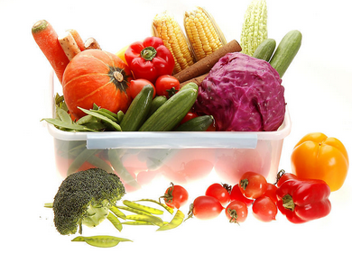

这个季节，素菜不仅种类多、口感好，营养也很丰富，而且吃得巧还可以起到

传统素食，主要是指以吃蔬菜为主的饮食方式。蔬菜是人体维生素和无机盐的主要来源，含有丰富的纤维素和一定数量的有机酸，对促进胃肠蠕动以及消化腺的分泌具有重要作用。
在我国现存最早的医学文献《黄帝内经》中，根据五行学说，在人体则以五脏为中心，五色与五脏相配，即绿、红、黄、白、黑五种大家熟知的蔬菜颜色，各入不同的脏腑，各有不同的作用。
红色主心，所属蔬菜有红
五色养生素食以低盐、低糖、低脂肪为准则，坚持新鲜入撰，视觉欢愉兼顾五脏均衡保健，充分体现中国素食哲学之精神内涵。
另外，酸、苦、甘、辛、咸等食物五味，与脏腑的关系也十分密切。《黄帝内经》中记载，酸味与肝相应，有增强肝脏的功能;苦味与心相应，可增强心脏功能;甘味与脾相应，可增强脾的功能;辛味与肺相应，可增强肺的功能;咸味与肾相应，可增强肾的功能。但在选择食物时，必须五味调和，这样才有利于健康;若五味过偏，会引起疾病的发生。所以平时要注意各种味道的搭配，做到五味调和、对应增补。
蔬菜营养搭配 蔬菜当中的多种成分都对健康有益，实验表明，吃完整的蔬菜要比吃分离出来的某种成分保健效果好得多，并且各种健康成分共同作用，要比仅仅吃一类健康成分效果更好。据研究者推测，不同的健康成分如
如果要得到蔬菜的健康好处，就应当广泛摄取不同的蔬菜，特别是那些颜色浓重的蔬菜，因为它们正是含保健成分和营养成分最多的品种。大红色的蔬菜含有番茄红素，紫红色和紫黑色的蔬菜含有花青素，橙色或黄色的蔬菜含有
同时，蔬菜的摄入数量也很要紧。吃一点点蔬菜，是不能充分获得其健康效应的。要想在膳食中占据10%的份额，需要每天摄入500-1000克的蔬菜，而且别忘记，其中最好能有一半以上的深绿、红色或橙色蔬菜。
蔬菜烹调应当清淡，油脂浸透、炒糊烤焦的蔬菜是没有防癌效果的。餐前吃点蔬菜能有效地给胃部杀毒，有助于防胃癌。据了解，蔬菜中含有极丰富的硝酸盐，进入胃部后可以产生氧化氮，能杀死胃中的有害细菌。色彩鲜艳的蔬菜对防癌作用极佳，可选择几样爽口而又赏心悦目的蔬菜用来餐前开胃。另外，如果空腹吃蔬菜，蔬菜的养分会在短时间内进至血液中，也有助于补充体力和养分。
食谱推荐原料：蕃茄2个、西兰花2棵
做法：蕃茄洗净、去皮，切成半月状;西兰花洗净并掰成小朵;炒锅入油烧至6分热时倒入西兰花和蕃茄，加入适量盐和鸡精，炒熟即可。
功效：番茄红素有利于预防前列腺癌，西兰花也是著名的防癌蔬菜。美国、澳大利亚等多国研究发现，同时食用西兰花与蕃茄，抗前列腺癌效果明显。
原料：木瓜1个、百合2颗
做法：把木瓜去籽后，切成长条状;将木瓜、百合放入开水中焯一下;将少许盐、糖、味精、水淀粉搅拌均匀;油锅热后，把木瓜、百合放入油锅翻炒，加调味汁，再迅速翻炒即成。
功效：木瓜被称为“百益果王”，木瓜碱能治胃病、软化血管，还有抗癌作用。百合是著名的保健食品和常用中药，主要含生物素、秋水碱等多种生物碱和营养物质，有营养滋补之功，能显著抑制黄曲霉素的致突变作用，临床上常用于白血病、肺癌、鼻咽癌等肿瘤的辅助治疗。
原料：胡萝卜数片、水发黑木耳100克、荷兰豆200克
做法：将胡萝卜、黑水耳、荷兰豆洗净、切片;油锅烧热后，先下胡萝卜，用小火翻炒出香味后，放入黑木耳和荷兰豆，最后撒入适量的盐和味精起锅。
功效：黑木耳的含铁量为猪肝的7倍，是一种非常好的天然补血食品，而且含钙量相当于鲫鱼的7倍，临床上常作为肿瘤病人的食疗。荷兰豆可增强人体新陈代谢的功能，并具有延缓衰老、美容保健的作用。